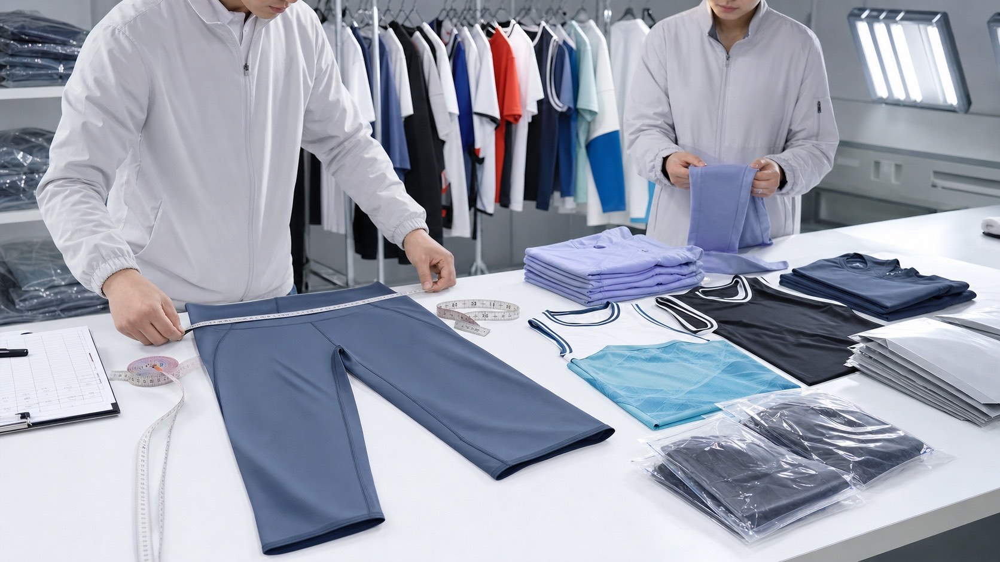
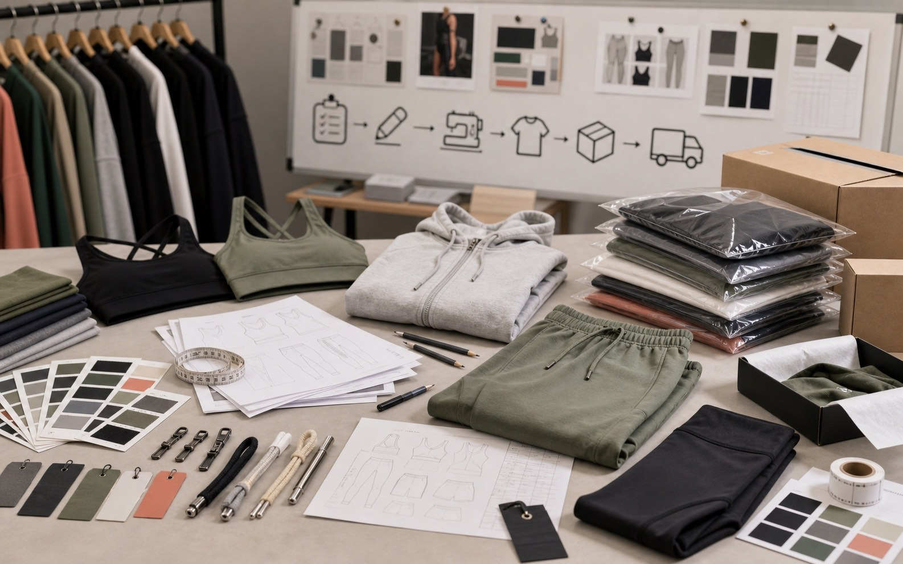
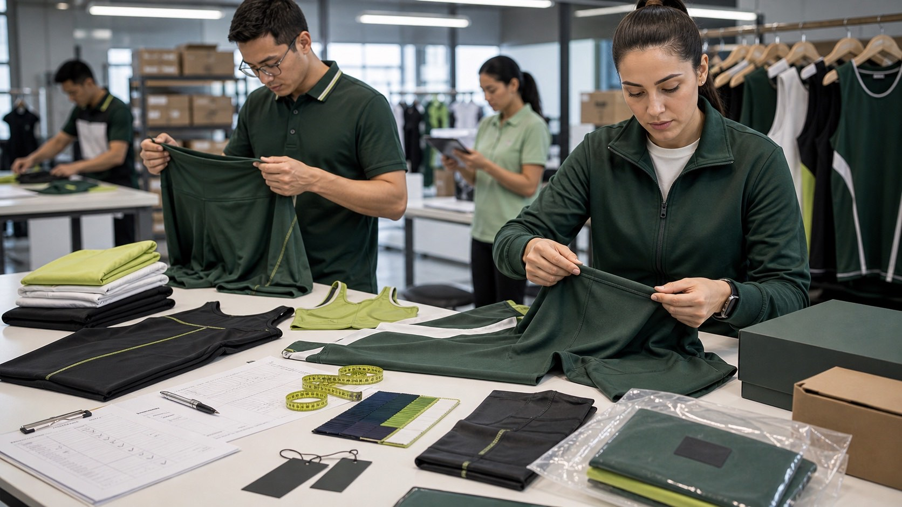
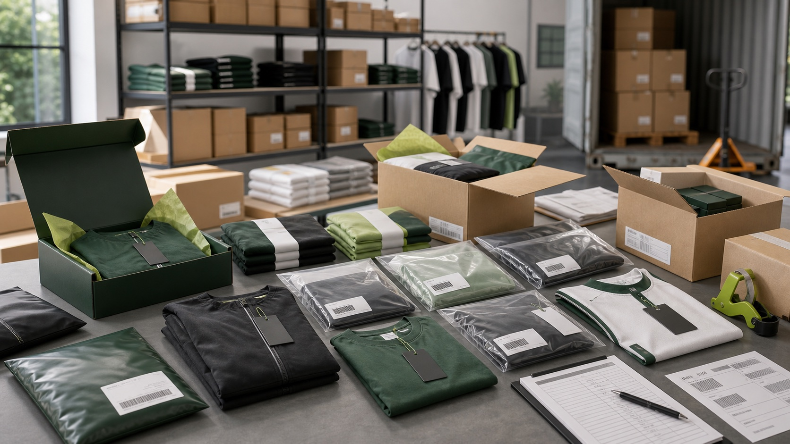

Sample room
Product references, fabric swatches, trims, size chart, packaging references, and sample comment records.

Video verification
Use this checklist to request useful media before ordering: sample room, fabric confirmation, logo process, QC inspection, packing, shipment, and live video call verification.
Media checklist
Short videos and timestamped photos can make a custom sportswear supplier easier to evaluate. Public video links can be added here when approved for release.
Product references, fabric swatches, trims, size chart, packaging references, and sample comment records.
Heat transfer, sublimation, embroidery, woven labels, hangtags, zipper pulls, drawcords, and packaging mockups.
Measurement checks, appearance inspection, label review, logo placement, color matching, and packaging verification.
Polybags, boxes, size stickers, barcode labels, carton marks, SKU sorting, player packing, and final loading preparation.
Media scenes
These are the media categories that should be recorded or photographed for buyer review.



Buyer FAQ
Yes. A video call can be used to review sample direction, fabric references, packaging needs, and the workflow needed for the project.
Useful videos include sample room, fabric swatches, logo process, measurement checks, packing area, carton labels, and shipment preparation.
Project-specific photos can be discussed during sampling and production updates, depending on confidentiality and production status.
Approved public videos can be added to the website, YouTube, LinkedIn, Alibaba International Station, or other buyer-facing channels for verification.
Send product category, target quantity, required verification points, and whether you need photos, video clips, or a live video call.